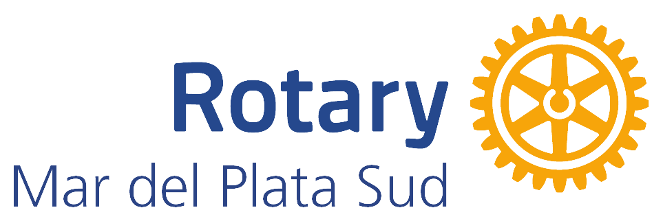

Arboretum
A place where nature educates, inspires and heals
Mar del Plata · Buenos Aires · Argentina
Welcome to the Arboretum at Estancia La Constancia, in Mar del Plata, Argentina: a living, 33-hectare botanical garden to explore, learn and reconnect. Discover its trees and birds, visit with your school, experience wellbeing among the trees, or bring your organization into conservation.
An arboretum is a living, documented collection of trees and woody plants, grown for scientific, educational and conservation purposes: in essence, a “living museum” of trees. Learn more »
Discover the Arboretum
In one minute, feel the spirit of the arboretum: 33 hectares of living nature in Mar del Plata, a place to explore, learn and reconnect. Watch the spot and discover everything you can experience here.
Experience the arboretum
Educational visits
Tours and activities for schools and groups, designed by educational level.
Wellbeing
Forest bathing and guided wellbeing experiences among the trees.
Sponsor a tree
Join conservation by sponsoring a specimen and following its story.
Purpose-driven companies
Bring your organization into conservation, with traceable and verifiable impact.
Volunteering
Lend a hand to a living botanical garden. We are building the team.
Book your visit
General visits and experiences to enjoy the arboretum all year round.
Explore
The arboretum, documented specimen by specimen: browse the map, the trees and the birds of a system that is truly alive.
Interactive Map
Walk the trails, sectors and points of interest, and search for any species by name.
Featured Flora
Meet the most representative specimens of the arboretum’s flora, of great botanical and historical interest.
Birds
Photo gallery and seasonal record of the birds observed on the estate.
About the Arboretum
The Arboretum brings together the biological surveys carried out at Estancia La Constancia to promote the conservation, research and environmental education of the local biodiversity. The photographs and surveys on this site were produced by the teams of biologists and ecologists who conduct monitoring work on the estate.
Join our arboretum logbook
Bloom updates, seasonal birds, visits, workshops and events. One email every so often, no spam. (Newsletter in Spanish.)
Institutions that support us
We are grateful to the institutions that support and accompany the development of the arboretum.
